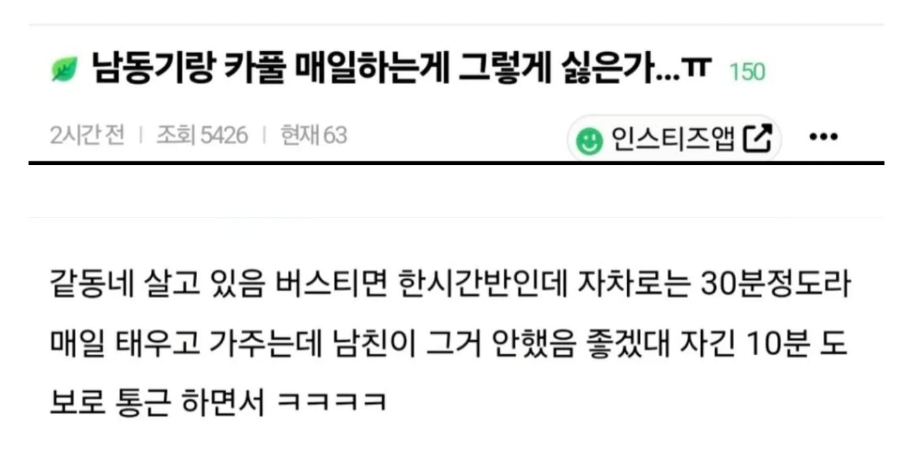

둘다 이해는 가네 ...

둘다 이해는 가네 ...
글을 이상하게 쓰네
차 얻어타는 걸로 남한테 뺏길까 전전긍긍하면 얼마나 매력이 없는 거냐 서로 신뢰도 없고 평소에 신뢰 쌓는 행동도 없었겠지 싶다
그리고 구속 심한 것들일수록 애정결핍이라서 오히려 바람핀다 알아둬라
혹자는 사친이랑 둘이 걍 여행만 갈 뿐인데 그걸로 바람날까 전전긍긍하면 얼마나 매력이 없는거냐 라고도 하더라.
연애 대상만으로는 몰라도, 나는 외간 남자랑 매일 같이 출근하러 가는 사람을 내 아이의 엄마로 삼을 그릇은 안 되는것 같음.
애초에 허용해주는 사람이 훨씬 드물걸ㅋㅋㅋ 유부녀가 다른 남자랑 매일 단둘이 남자 차 타고 출근한다고 했을 때 미친거 아니냐고 반응 할 사람이 대부분 아닌가
쿨병 뒤지네 결혼이나 했냐
여자 사귀어보긴 했냐? 연인관계라는게 무슨 미연시 롤플레잉 게임마냥 매력도 90이면 안정권 매력도 60이면 바람위기 이런건줄 아나보네 ㅋㅋㅋ


아니 싯팔 누가 태워주는거야 그래서 여자친구가 얻어타는거면 차사주거나 출근시켜줄거아니면 걍 있어야 된다 봄 맘에안들면 헤어지던지
저건 애초에 여자가 저 상황을 만든 이상 헤어지는게 맞음
여자 입장에서 카풀 포기하기 힘든 상황이고 바람날 확률 압도적으로 높아지는 것도 사실이고
남자가 카풀하지 말라고 하기도 그렇고 찝찝한 것도 사실이고
그냥 가까운 사람이랑 잘해보라하고 헤어지는게 깔끔함
저런 상황 만들기 싫었으면 애초에 카풀 시작도 안했어야했음
저 상황에서 여자가 저렇게 말해버리면 뭐 헤어지는 것 말고는 답 없지ㅋㅋㅋ
차만큼 프라이빗한 공간이 없는데 매일 통근을 같이?ㅋㅋㅋ 장난똥때리나ㅋㅋㅋ
ㅇㅈ
너같으면 남친이 매일 여자동기 카풀해주면 허용해줄 수 있음?
카풀해주는게 별건가?
인간관계 모든문제는 사람을 사람으로 안보고 물건으로 보는데서 비롯됨
내가 기분나쁜것과 그래서 상대방에게 하지말라고 강요하고 통제하는건 다른문제임
기분이야 나쁠수있는데 그게 여자친구가 잘못해서 그런건지
온전히 본인의 유아틱한 질투심때문인지 생각을해봐야지
애초에 연인이라는 관계자체가 상대방이 나를 사랑한다는 믿음에서부터 시작되는 관계인데
그걸 간과하고 의처증걸린 미친놈처럼 요구의 탈을쓴 통제하는건 집착이고 이기심임
반대로 생각하면,
연인 관계라는 점으로 들어갔을 때에는 서로에 대한 예의와 자발적 구속은 필요함.
밀폐된 공간에서 남녀가 둘이 있게되는 상황에 대해서
어떤 것이 옳고 어떤 것이 그른지는 그 두사람이 합의해야 할 사항임. 타인의 관점이 필요한 부분이 아님.
하지만 누가 봐도 저 상황은 합의가 되지 않은 모습으로 보임.
이를 근거로 했을 때에는 탑승자가 상대방에게 충분한 신뢰감과 안정감을 주었는가에 대한 의문이 생김.
님 말대로 단순한 질투심이라기 보다는 합의되지 않은 외부 관계에 대한 배신감으로 보는 것이 옳아보임.
그렇게 봤을 때 통제고 집착이고 이기심인가? 를 생각하기 이전에
미래를 함께 계획하고 조율하는 과정에서 서로의 자유를 일부 제한하고 양보할 수 있는
동반자로서의 암묵적인 약속이 확실히 지켜졌는지를 먼저 살펴봐야 함.
이 약속이 이루어졌는데도 뭐라고 얽어매면 집착이라고 할 수 있을 것 같고.
이 약속을 무시하고 지 멋대로 행동한거면 배려없는 사람이라고 할 수 있겠음.
오이밭에서 신발을 고쳐 신지 말고
자두나무 아래서 갓 고쳐 쓰지말랬다
오해만들 상황 자체를 만들지를 말이야지
세상이 상식적으로 돌아가지만 않는데
사랑한다는 믿음으로 하나하나 양보하다 그거
이용해서 바람피고 외도나는 상황 몰라?
밤에 급하게 미팅해야하는데 장소가 없네 ㅎㅎ;; 모텔가서 급한 비지니스 좀 할까낭
카풀하는 동기 의견도 들어봐야 한다
애매하긴 한데.. 그래도 카풀 안하는게 나을듯함. 아니면 카풀 인원을 늘려서 가던가
정상인이면 좋아할 사람없지
헤어지는게 맞음
선후 관계를 봐야 하지 않을까?
연인 사이였는데 카플시작하면 안하라는게 맞고
회사 생활하면서 카플 하고 있었는데 연인관계 되었다면 무조건 하지마라는 어려울듯
어...
사실 매일 통근하면서 단 둘이 차로가는거면 남친입장에서 굉장히 아니꼽고 좆같을거는 맞음
여자도 개빡통 or 꽃밭이 아니면 남친이 어떻게 느낄지 당연히 알테니 알아서 불편하게 다니거나 미리 허락을 구해놨어야 하는게 맞음
근데 대안을 줄게 아니면 반대하기도 좀 그래
지는 편하게 다니니까라는 저딴 개좆같은 쳐맞는말 나오기 쉽거든
기분만 나쁘고 갈등해결에 전혀 도움안되는 맞기만 한 말
카풀이든 불만이든 쳐맞는말이든 이미 나온거니 주워담을수는 없지만
부딛치는 영역이 생겼는데 무시하고 바뀌지않으면 결국 관계는 변하기 마련임
이미 변한 관계에서는 닭이먼저냐 알이먼저냐 라는건 의미가 없어지지
바람 날 사람은 나고 안날사람은 뭔짓을 해도 안남 근데 마음 내려놓기가 쉽지않지ㅋㅋㅋㅋ
나도 대중교통으론 한시간 넘게, 차로는 20분 걸리는 직장 다닐때 카풀 얻어 탔었고 그 감사한 마음으로 차 생겼을때 사람들 많이 태워주고 다녔었기에 이해해줄수 있음
이야 동기가 카풀을 매일? 진짜 대단하네
저러다 눈 맞는 일이 있으니까 그러지 ㅋㅋ 근데 여자 입장에선 저 편의는 포기할 수 없는 거라 싫을테고 남자가 그냥 못 버티겠으면 헤어지는 게 맞음
와 둘다 이해감 어렵다 ㅋㅋ 이건 각자자기입장에선 다 맞는말임..
한시간반.. 30분.. 대신 비지니스적으로 확실하게 처리한다는 식이면 나라면 이해할거같은데 완전 개꿀이자너
둘다 이해는 가는데 자동차든 월세방이든 뭐하나 안보태줄거면 걍 헤어지는게 속편할듯
아... 진짜 양쪽 입장 다 이해가네
근데 근본적으로 1시간30분 걸리는 회사에 다니기로 선택한 건 본인 아님?
남자동기 카풀이 회사 복지로 지원되는 통근버스도 아니고, 왜 꼭 그걸 타고 출근해야함??
원래 30분 거리에 있던 본사 출근하다가 갑자기 1시간30분 걸리는 지사로 옮기라는 것도 아니고
남자친구가 싫어하면 원래 시간대로 출퇴근하는게 맞지 않나?
그동안 남자동기 덕분에 편하게 출퇴근한거고 이제 정상화하는거지
그렇게 논리로 따지면 어떻게함. 비겁해.
그게 싫으면 원인을 해결해주고 꺼드럭대야지 그게아니면 그냥 집착이고 징징거리는거고
이사가거나 이직하는걸 남자가 도와줘야해?
근데 그걸 굳이 꼭 해줘야 하는것도 아니고 싫다면 안해줘도 되는거 아닌가??
이거 어렵다 1시간 30분이면 삶의질이 달라지는데
이걸 가지고 ‘왜 의심하지? 속 좁고 짜증나네’ 이런 생각 들면 헤어지는 게 서로에게 좋을 듯
저런 작은 일에도 공감을 못 하면서 무슨 연애를 하겠다고 ㅋㅋ
카풀 하지 말라는 게 아니라, 여자친구 측이 이 부분에 대해 남친에게 충분히 공감해주고, 관계상의 여러 장치로 안도감을 준다면 해결될 일임
전 여친은 회사 부장하고 카풀 했음. 지하철 타나 카풀하나 시간은 비슷한데 지옥철을 경험해야함. 지옥철을 피하기 위해 부장과 카풀한다. 이것부터 정상은 아닌듯. 근데 그것 보다 중요한건 술 처먹으면 주사있고 필름 끊기고 연락이 안됨. 술 꽐라 되는 여자 첨부터 만나지마라. 대부분의 문제는 술로 시작된다. 술 먹이고 꼬시고 싶지? 그거 남들도 한다ㅋ
모 회사 입사할때 신입 연수 잠깐 가서 만난 어린친구 성비 ㅈ되서 남자 한 4~50명에 여자 둘인데 여자 하나는 유부녀 하나는 귀염통통한애.
저거 갖고싶다 하는 생각은했어도 다른남자애들이랑 엄청 친해보이고 그래서 그냥 말도안걸고 있었는데 번호 따 가더니 연락오더라. 당연히 만났고 연애하는듯이 흘러갔음.
근데 일하는 지점이 다른데 퇴근 시간 지나서 한시간정도 연락이 항상 안되더라.
물어보니 같은 지점에 남자선배가 같은 동네쪽이라 태워다 준다함. 그럼 퇴근할 때 쯤에 카톡이나 남겨줘라 기다리지 않냐. 했더니 일이주만에 헤어지자 통보받음. 며칠 안지나 보니 그새끼랑 사귀더라. 씨발거
지랄하지 마라
남들은 병신이라 차 안타고 1시간 30분 걸려서 출퇴근 하는 줄 아나
남 차 맨날 얻어타는 거에 아무 거리낌 없는 거 자체가 문제임
내일부터 여사친이랑 같이 가기로했어